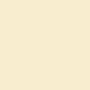
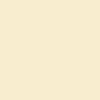

A wide Reflection about intellectual Arrogance
Recently, I was thinking about a sentence that was said by a weird philosopher with a weird moustache who was known for saying weird things. One of those weird things was, "It is necessary to have chaos inside of yourself to create a beautiful dancing star." However, in my case, instead of a constellation in its magnificence and glory, I'm sensing a stroke or a brain aneurysm. I think that what will come of me is not something good; the words are jumping from my mind and falling on my keyboard to escape the mental apocalypse of my boiling brain at this moment. I have concluded that a person whose life experiences guided his personality environment as a cowardly person, and who has perceptive thoughts about life, constitutes a pathological entity fated to failure—especially when that person already has a consolidated consciousness about the inevitability of his own condition: to live an entire life in a spiral of wishes without ever being able to do anything. I'm my own jailer, enclosed between the willingness to act and the absolute mental paralysis in a relentless overlap.
I avoid any kind of challenge, never impose myself on anything, and am completely insecure. I sought cynicism as a way to mask my shameful flaws, such as intellectual arrogance, cowardice, and fear of failure. I use it constantly to escape responsibilities, cowardly discard my ambitions, and soften the impact of constant failures in my life.


 
